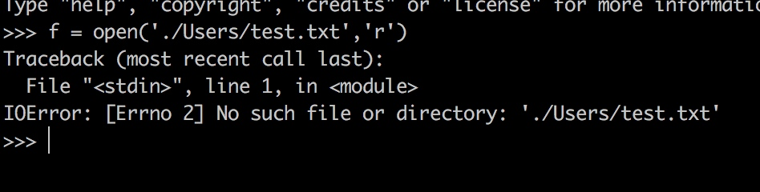
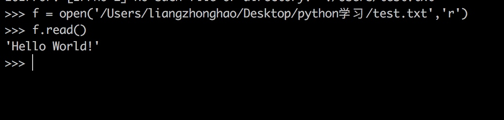
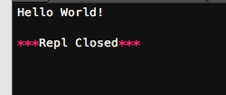
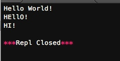
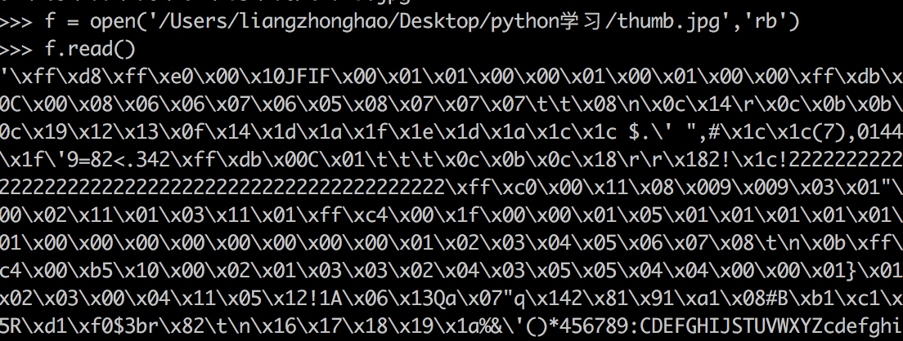

文件读写
读文件
要以读文件的模式来打开一个文件对象，使用Python内置的open（）函数，传入文件名和标识符：
>>> f = open('/Users/michael/test.txt', 'r')
标示符'r'表示读，这样，我们就成功地打开了一个文件。
如果文件不存在，open()函数就会抛出一个IOError的错误，并且给出错误码和详细的信息告诉你文件不存在：

如果文件打开成功，接下来，调用read()方法可以一次读取文件的全部内容，Python把内容读到内存，用一个str对象表示：

由于文件读写时都有可能产生IOError，一旦出错，后面的f.close()就不会调用。所以，为了保证无论是否出错都能正确地关闭文件，我们可以使用try ... finally来实现。这种方法太麻烦。我们这里使用python所提供的方法：
Python引入了with语句来自动帮我们调用close()方法：
# -*- coding: utf-8 -*-
with open('/Users/liangzhonghao/Desktop/python学习/test.txt','r') as f:
print f.read()

这和前面的try ... finally是一样的，但是代码更佳简洁，并且不必调用f.close()方法。
调用read()会一次性读取文件的全部内容，如果文件有10G，内存就爆了，所以，要保险起见，可以反复调用read(size)方法，每次最多读取size个字节的内容。另外，调用readline()可以每次读取一行内容，调用readlines()一次读取所有内容并按行返回list。因此，要根据需要决定怎么调用。
如果文件很小，read()一次性读取最方便；如果不能确定文件大小，反复调用read(size)比较保险；如果是配置文件，调用readlines()最方便：
# -*- coding: utf-8 -*-
with open('/Users/liangzhonghao/Desktop/python学习/test.txt','r') as f:
for line in f.readlines():
print(line.strip()) #把末尾的'\n'删掉

file-like Object
像open()函数返回的这种有个read()方法的对象，在Python中统称为file-like Object。除了file外，还可以是内存的字节流，网络流，自定义流等等。file-like Object不要求从特定类继承，只要写个read()方法就行。
StringIO就是在内存中创建的file-like Object，常用作临时缓冲。
二进制文件
前面讲的默认都是读取文本文件，并且是ASCII编码的文本文件。要读取二进制文件，比如图片、视频等等，用rb模式打开文件即可：

写文件
写文件和读文件是一样的，唯一区别是调用open()函数时，传入标识符'w'或者'wb'表示写文本文件或写二进制文件：
>>> f = open('/Users/liangzhonghao/Desktop/python学习/test.txt', 'w')
>>> f.write('Hello, world!Again！')
>>> f.close()
这里推荐直接调用with方法：
# -*- coding: utf-8 -*-
with open('/Users/liangzhonghao/Desktop/python学习/test.txt','w') as f:
f.write('Hello, world!Again!')

要注意的是一旦写入文件，原来文件中的内容会被删除！
小结
在Python中，文件读写是通过open()函数打开的文件对象完成的。使用with语句操作文件IO是个好习惯。